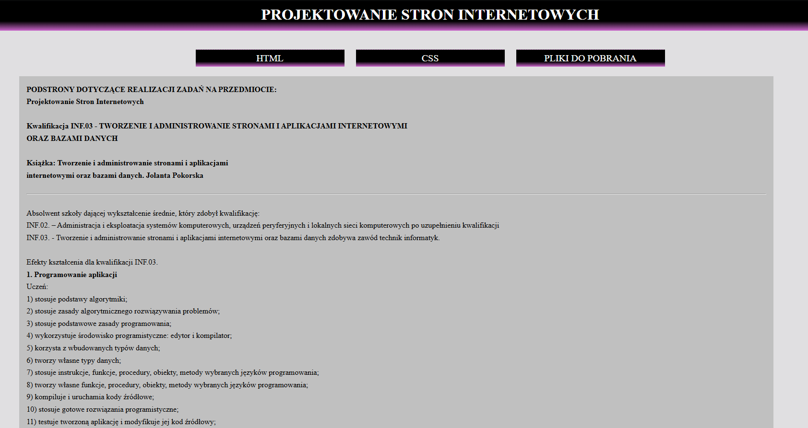

HTML
STRONA GŁÓWNA KOLORY NAUCZYCIELE ZDJĘCIA TABELA TABELA NA OCENE LISTY LISTY NA OCENE MAPY ODSYŁACZY FORMULARZ FORMULARZ NA OCENE OBRAZY I MULTIMEDIA WŁAŚCIWOŚCI CSS IDENTYFIKATOR CSSDOKUMENT
lista grupy 2 w 2cLINKI


Dyrektor szkoly - Karol Juraszczyk [akapit - kolor grantowy, rozmiar 18px]
MÓJ ULUBIONY PRZEDMIOT INFORMATYCZNY TO: PSI :) wicedyrektor - Anna Nakonieczna [pochylenie, kolor czerwony, czcionka tahoma] Wychowaca klasy - Beata Hibszer [span - czcionka ravie, kolor zielony]Język Polski - Renata Słabicka [q - tekst cytowany]
Język Angielski- Anna Sanocka
Język Niemiecki- Aneta RoikHistoria - Joanna Szafirska - Dworak [podświetlony tekst na żółto] Geografia - Beata Hibszer [span - kolor fuchsia, wielkosc 26px]
Matematyka - Katarzyna Matyka [tekst preformatowany]Fizyka - Barbara Iskra [pogrubienie] Biologia - Ewa Banasik [tekst o silnym znaczeniu, kolor limonka w HEX RGB] WF - Jacek Jabłoński i Paweł Jabłoński [pomniejszony tekst, kolor orange]
Podstawy przedsiębiorczosci - Anna Maroń [blockquote, kolor teal w HEX RGB]
Informatyka - Adam Tużyniecki [dymek "I" + akapit w kolorze oliwkowym w HEX RGB]
Prowadzenie działalności gospodarczej - Anna Maroń [dymek + tytuł (cite) w kolorze brązowym] Komputerowe Wspomaganie Projektowania - Krzysztof Bobowski [ dymek + podkreslenie ALE nie < u > ] Administrowane Sieciemi Komputerowymi - Adrian Wachowiak [indeks górny] Administrowanie Systemem Windows - Norbert Gajos [indeks dolny] Administrowanie Systemem Linux - Adam Turzyniecki Projektowanie Stron Internetowych - Barbara Micińska Serwisowanie Komputera - Adrian Wachowiak Wychowanie do życia w rodzinie - Ewa Gwóźdź[okno dialogowe]